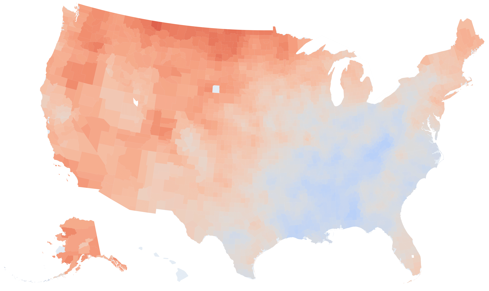

Data Preparation and Advanced Visualization Using The Washington Post's series, "2ºC: Beyond the Limit." Data
Climate change and global warming are real, observable, and measurable. This project conducts time series analysis using the data supporting The Washington Post's series, "2ºC: Beyond the Limit.", to quantify the links between the climate variation and different drivers of change.
Motivation and Summary
I got really interested in finding and analyzing this data set after reading the Washington Post's article. Here's the link to WP's github repository and some more details about the data set:
-
The data supporting the Washington Post's series, 2°C: Beyond the limit, that was awarded the Pulitzer prize for explanatory reporting (link to data). The dataset includes:
fips: A five digit fips code for the countyCTYNAME: the name of the countySTNAME: the name of the stateAnnual: Estimate of annual average temperature change in Celsius for the county, 1895-2019Fall: temperature change in September, October and NovemberSpring: temperature change in March, April and MaySummer: temperature change in June, July and AugustWinter: temperature change in December and the following January and Februarymax_warming_season: the season where temperatures are increasing fastest
The data set includes county-level annual temperatures for the US counties. It can be used, as is and without much cleaning, for analysis and visualization purposes. However, after going through the raw files in the repository, I realized there's another file that has the data above with more details, where the average temperature for each county is recorded monthly for the same period of time (1895-2019). This is great because it gives me a better opportunity to analyze not only the long-time behavior of the temperature time series (Drift) but also the Seasonal fluctuations over time.
I decided to breakdown this project into two parts where in part 1, I go through the data cleaning, data imputation, and data visualization using Plotly. In part 2, I use the data from part 1 to design a 'Drift' + 'Seasonal' + 'Noise' time series model for temperature forecasting.
Data Exploration
Here's the first few lines of the raw file:
head -5 climdiv-tmpccy-v1.0.0-2020010601001021895 44.00 38.20 55.50 64.10 70.60 78.30 80.40 80.40 79.00 61.40 54.40 45.30 01001021896 44.30 49.00 54.00 69.30 76.80 78.00 81.70 83.10 77.90 64.70 58.00 47.30 01001021897 43.70 52.30 61.30 63.00 70.00 82.40 82.40 79.60 76.60 67.40 54.90 48.20 01001021898 50.10 46.80 60.10 59.60 75.00 81.50 80.80 79.20 76.20 62.10 50.20 44.20 01001021899 44.60 41.50 56.60 62.30 76.70 81.00 81.00 81.50 74.30 66.60 55.70 45.30
As you can see, the file doesn't have a header so we need to create a list for the column names. The first entry seems to be county FIPS code (5 digits) + 02 + year with the next 12 entries denoting the monthly average temperatures.
I start with creating a list and dictionary for month names:
months = [month for month in month_name][1:]
print(months)
months_dict = dict(zip(months,np.arange(1,13)))
print(months_dict) ['January', 'February', 'March', 'April', 'May', 'June', 'July', 'August', 'September', 'October', 'November', 'December']
{'January': 1, 'February': 2, 'March': 3, 'April': 4, 'May': 5, 'June': 6, 'July': 7, 'August': 8, 'September': 9, 'October': 10, 'November': 11, 'December': 12}
The file doesn't have a header so we create a list for the column names
WP_df = pd.read_csv('climdiv-tmpccy-v1.0.0-20200106',
delimiter=r"\s+",
header=None,
names = ['FipsYear']+months)
WP_df.head()| FipsYear | January | February | March | April | May | June | July | August | September | October | November | December | |
|---|---|---|---|---|---|---|---|---|---|---|---|---|---|
| 0 | 1001021895 | 44.000 | 38.200 | 55.500 | 64.100 | 70.600 | 78.300 | 80.400 | 80.400 | 79.000 | 61.400 | 54.400 | 45.300 |
| 1 | 1001021896 | 44.300 | 49.000 | 54.000 | 69.300 | 76.800 | 78.000 | 81.700 | 83.100 | 77.900 | 64.700 | 58.000 | 47.300 |
| 2 | 1001021897 | 43.700 | 52.300 | 61.300 | 63.000 | 70.000 | 82.400 | 82.400 | 79.600 | 76.600 | 67.400 | 54.900 | 48.200 |
| 3 | 1001021898 | 50.100 | 46.800 | 60.100 | 59.600 | 75.000 | 81.500 | 80.800 | 79.200 | 76.200 | 62.100 | 50.200 | 44.200 |
| 4 | 1001021899 | 44.600 | 41.500 | 56.600 | 62.300 | 76.700 | 81.000 | 81.000 | 81.500 | 74.300 | 66.600 | 55.700 | 45.300 |
WP_df.dtypes FipsYear int64
January float64
February float64
March float64
April float64
May float64
June float64
July float64
August float64
September float64
October float64
November float64
December float64
dtype: object
Note that pandas recognizes the first column to have the type int which might cause some issues later because the leading zero for the fips numbers starting with 0 has been mistaknely eliminated. We can resolve this issue in multiple different ways but here, we use the apply() method of Pandas to make the transofrmation. We also split the contents of the first column to two new columns: fips and year.
WP_df['year']=WP_df['FipsYear'].apply(lambda x: str(x)[-4:])
print(WP_df['year'].head()) 0 1895
1 1896
2 1897
3 1898
4 1899
Name: year, dtype: object
WP_df['fips']=WP_df['FipsYear']. \
apply(lambda x: '0'+str(x)[:4] if len(str(x))<11 else str(x)[:5])
print(WP_df['fips'].head()) 0 01001
1 01001
2 01001
3 01001
4 01001
Name: fips, dtype: object
WP_df.drop(['FipsYear'], axis=1, inplace=True)
WP_df.head()| January | February | March | April | May | June | July | August | September | October | November | December | year | fips | |
|---|---|---|---|---|---|---|---|---|---|---|---|---|---|---|
| 0 | 44.000 | 38.200 | 55.500 | 64.100 | 70.600 | 78.300 | 80.400 | 80.400 | 79.000 | 61.400 | 54.400 | 45.300 | 1895 | 01001 |
| 1 | 44.300 | 49.000 | 54.000 | 69.300 | 76.800 | 78.000 | 81.700 | 83.100 | 77.900 | 64.700 | 58.000 | 47.300 | 1896 | 01001 |
| 2 | 43.700 | 52.300 | 61.300 | 63.000 | 70.000 | 82.400 | 82.400 | 79.600 | 76.600 | 67.400 | 54.900 | 48.200 | 1897 | 01001 |
| 3 | 50.100 | 46.800 | 60.100 | 59.600 | 75.000 | 81.500 | 80.800 | 79.200 | 76.200 | 62.100 | 50.200 | 44.200 | 1898 | 01001 |
| 4 | 44.600 | 41.500 | 56.600 | 62.300 | 76.700 | 81.000 | 81.000 | 81.500 | 74.300 | 66.600 | 55.700 | 45.300 | 1899 | 01001 |
Transforming our data into a more convenient format
Time Series data are best useful when represented using a timestamp, i.e., a column that represents the temperature for each county using a year-month format. The new DataFrame has five columns: timestamp, temperature (in $^{\circ}\text{F}\,$), fips code, county name, and state name.
climate_df = pd.DataFrame(columns=['timestamp', 'tempf', 'fips', 'county', 'state'])
climate_df.head()| timestamp | tempf | fips | county | state |
|---|
Adding fips information to Washington Post data
Washington Post data that includes the variation of temperatures over the period 1895-2019 is a county-level data where the counties are represented using their Federal Information Processing Standards (FIPS) codes. As we will see later, including the county and state names will be helpful for visualization purposes.
We need to find a table that converts these codes to the county/state names before being able to join the two climate dataframes.
## obtaining the fips table from
## https://www.nrcs.usda.gov/wps/portal/nrcs/detail/national/home/?cid=nrcs143_013697
NRCS page has a table including FIPS codes for every county in the US. We use a relatively straightforward way to convert this table into a useful dictionary in Python. First, we need to get the contents of the html page.
response = requests.get('https://www.nrcs.usda.gov/wps/portal/nrcs/detail/national/home/?cid=nrcs143_013697')The most important components of a response to check before moving forward are the status code and the content.
response.status_code200
We get a response code of 200, meaning that our request was 'Successful'!
response.content[:100]b'\r\n\r\n\r\n\r\n \r\n \r\n\r\n \r\n\r\n \r\n \r\n\r\n \r\n \r\n \r\n \r\n \r\n \r\n \r\n \r\n \r\n'
We can check the response text using BeautifulSoup. BeautifulSoup allows us to find our tag of interest by specifying one of its attributes. By inspecting the table tag in this case we realize that it has and attribute class="data". Furthermore, SoupStrainer method of the bs4 library can be used to limit our search to table tags only.
soup = BeautifulSoup(response.text,'html.parser',parse_only=SoupStrainer('table'))
table = soup.find("table", { "class" : "data" })
print(table.text[:50])FIPS
Name
State
01001
Autauga
AL
01003
Bald
Looks Ok! Next we want to encapsulate this information into a list() or DataFrame
def get_row_data(tr, column_tag='td'):
return [td.get_text(strip=True) for td in tr.find_all(column_tag)]
rows = []
trs = table.find_all('tr')
headerow = get_row_data(trs[0], 'th')
for tr in trs: # for every table row
rows.append(get_row_data(tr)) # data row
print(headerow)['FIPS', 'Name', 'State']
rows[1:5] [['01001', 'Autauga', 'AL'],
['01003', 'Baldwin', 'AL'],
['01005', 'Barbour', 'AL'],
['01007', 'Bibb', 'AL']]
fips_df_nrcs = pd.DataFrame(rows[1:],columns=['FIPS', 'county', 'state'])
fips_df_nrcs.head()| FIPS | county | state | |
|---|---|---|---|
| 0 | 01001 | Autauga | AL |
| 1 | 01003 | Baldwin | AL |
| 2 | 01005 | Barbour | AL |
| 3 | 01007 | Bibb | AL |
| 4 | 01009 | Blount | AL |
We save the dataframe for later use.
#fips_df_nrcs.to_pickle('fips.pkl')
fips_df_nrcs=pd.read_pickle('fips.pkl')Creating a DataFrame suited for Time Series Analysis
Now that I have the fips dictionary ready, I have the following plan to populate the DataFrame:
- First, I filter the DataFrame rows by fips.
- Then, I reshape the month column temperatures into a single-column vector that are temporally ordered
- Next, I add a timestamp column that I have generated before. The timestamp column temporally matches the temperatures in the previous column.
- Finally, I create an array of ($12\times\text{number of years}$) rows and 3 columns for the fips code, the county name, and the state name.
- I repeat the same procedure for the rest of the fips codes.
WP_df.head()| January | February | March | April | May | June | July | August | September | October | November | December | year | fips | |
|---|---|---|---|---|---|---|---|---|---|---|---|---|---|---|
| 0 | 44.000 | 38.200 | 55.500 | 64.100 | 70.600 | 78.300 | 80.400 | 80.400 | 79.000 | 61.400 | 54.400 | 45.300 | 1895 | 01001 |
| 1 | 44.300 | 49.000 | 54.000 | 69.300 | 76.800 | 78.000 | 81.700 | 83.100 | 77.900 | 64.700 | 58.000 | 47.300 | 1896 | 01001 |
| 2 | 43.700 | 52.300 | 61.300 | 63.000 | 70.000 | 82.400 | 82.400 | 79.600 | 76.600 | 67.400 | 54.900 | 48.200 | 1897 | 01001 |
| 3 | 50.100 | 46.800 | 60.100 | 59.600 | 75.000 | 81.500 | 80.800 | 79.200 | 76.200 | 62.100 | 50.200 | 44.200 | 1898 | 01001 |
| 4 | 44.600 | 41.500 | 56.600 | 62.300 | 76.700 | 81.000 | 81.000 | 81.500 | 74.300 | 66.600 | 55.700 | 45.300 | 1899 | 01001 |
Creating the timestamp column
all_years = WP_df.year.unique()
all_months = months
# A little test before going full on
for i, year_month in enumerate(product(all_years[:2], all_months)):
print(pd.to_datetime(year_month[0]+year_month[1], format='%Y%B')) 1895-01-01 00:00:00
1895-02-01 00:00:00
1895-03-01 00:00:00
1895-04-01 00:00:00
1895-05-01 00:00:00
1895-06-01 00:00:00
1895-07-01 00:00:00
1895-08-01 00:00:00
1895-09-01 00:00:00
1895-10-01 00:00:00
1895-11-01 00:00:00
1895-12-01 00:00:00
1896-01-01 00:00:00
1896-02-01 00:00:00
1896-03-01 00:00:00
1896-04-01 00:00:00
1896-05-01 00:00:00
1896-06-01 00:00:00
1896-07-01 00:00:00
1896-08-01 00:00:00
1896-09-01 00:00:00
1896-10-01 00:00:00
1896-11-01 00:00:00
1896-12-01 00:00:00
Looks fine! Moving on!
timestamps_list = []
for i, year_month in enumerate(product(all_years, all_months)):
timestamps_list.append(pd.to_datetime(year_month[0]+year_month[1], format='%Y%B'))Sanity check!
assert((2019-1895+1)*12==len(timestamps_list))Again, a little test before iterating through the entire rows:
climate_df = pd.DataFrame(columns = ['timestamp', 'tempf', 'fips', 'county', 'state'])
climate_df.head()| timestamp | tempf | fips | county | state |
|---|
for i, fips in enumerate(WP_df.fips.unique()[:2]):
temperature_array = WP_df[WP_df['fips']==fips] \
.iloc[:,:12] \
.values \
.reshape(-1,1)
fips_array = np.asarray([fips] * len(temperature_array)).reshape(-1,1)
county_and_state = fips_df_nrcs.set_index('FIPS').loc[fips].to_list()
county_and_state_array = np.asarray(county_and_state * len(temperature_array)).reshape(-1,2)
data_array = np.hstack([np.asarray(timestamps_list).reshape(-1,1),
temperature_array,
fips_array,
county_and_state_array])
tmp_df = pd.DataFrame(data_array, columns = ['timestamp', 'tempf', 'fips', 'county', 'state'])
climate_df = pd.concat([climate_df, tmp_df])climate_df.head()| timestamp | tempf | fips | county | state | |
|---|---|---|---|---|---|
| 0 | 1895-01-01 | 44.000 | 01001 | Autauga | AL |
| 1 | 1895-02-01 | 38.200 | 01001 | Autauga | AL |
| 2 | 1895-03-01 | 55.500 | 01001 | Autauga | AL |
| 3 | 1895-04-01 | 64.100 | 01001 | Autauga | AL |
| 4 | 1895-05-01 | 70.600 | 01001 | Autauga | AL |
Perfect! Now we can go ahead and create the DataFrame:
for i, fips in enumerate(WP_df.fips.unique()[2:]):
temperature_array = WP_df[WP_df['fips']==fips] \
.iloc[:,:12] \
.values \
.reshape(-1,1)
fips_array = np.asarray([fips] * len(temperature_array)).reshape(-1,1)
county_and_state = fips_df_nrcs.set_index('FIPS').loc[fips].to_list()
county_and_state_array = np.asarray(county_and_state * len(temperature_array)).reshape(-1,2)
data_array = np.hstack([np.asarray(timestamps_list).reshape(-1,1),
temperature_array,
fips_array,
county_and_state_array])
tmp_df = pd.DataFrame(data_array, columns = ['timestamp', 'tempf', 'fips', 'county', 'state'])
climate_df = pd.concat([climate_df, tmp_df]) ---------------------------------------------------------------------------
KeyError Traceback (most recent call last)
...
KeyError: '02001'
Even though the web scraping works fine, it seems like the fips data obtained from the above method lacks a few fips numbers, e.g., '02001'; therefore I use a public dataset from Plotly to obtain a complete fips data:
fips_df_plotly = pd.read_csv("https://raw.githubusercontent.com/plotly/datasets/master/fips-unemp-16.csv", dtype={"fips": str})
fips_df_plotly.head()| fips | unemp | |
|---|---|---|
| 0 | 01001 | 5.300 |
| 1 | 01003 | 5.400 |
| 2 | 01005 | 8.600 |
| 3 | 01007 | 6.600 |
| 4 | 01009 | 5.500 |
Comparing it with the initial fips data:
len(fips_df_nrcs), len(fips_df_plotly)(3231, 3219)
Interestingly, the initial fips data has more entries! Let's compare the fips data in with the union of the two fips datasets that we have obtained so far:
len(set(WP_df.fips).difference(set(fips_df_plotly.fips).union(set(fips_df_nrcs.FIPS))))1538
Ok! something's definintely wrong! What I do next is that I print the number of unique fips codes for each state (the first two digits in the fips code denotes the state) from the three sources to figure out what causes this discrepancy. My guess is that one dataset has shifted the state codes that causes the mismatch. The maximum and minimum values of the state code are '01'('AL' or 'Alabama') and '78'('VI' or 'Virgin Islands').
state_codes = ['0'+f'{x}' if x<10 else f'{x}' for x in range(1,73)]
print(state_codes) ['01', '02', '03', '04', '05', '06', '07', '08', '09', '10', '11', '12', '13', '14', '15', '16', '17', '18',
'19', '20', '21', '22', '23', '24', '25', '26', '27', '28', '29', '30', '31', '32', '33', '34', '35', '36',
'37', '38', '39', '40', '41', '42', '43', '44', '45', '46', '47', '48', '49', '50', '51', '52', '53', '54',
'55', '56', '57', '58', '59', '60', '61', '62', '63', '64', '65', '66', '67', '68', '69', '70', '71', '72']
for state_code in state_codes:
WP_unique_fips = len(WP_df[WP_df['fips'].str.startswith(state_code)]['fips'].unique())
unique_fips_df_nrcs = len(fips_df_nrcs[fips_df_nrcs['FIPS'].str.startswith(state_code)]['FIPS'].unique())
unique_fips_df_plotly = len(fips_df_plotly[fips_df_plotly['fips'].str.startswith(state_code)]['fips'].unique())
print(state_code, WP_unique_fips, unique_fips_df_nrcs, unique_fips_df_plotly) 01 67 67 67
02 15 27 29
03 75 0 0
04 58 15 15
05 64 75 75
06 8 58 58
07 3 0 0
08 67 63 64
09 159 8 8
10 44 3 3
11 102 1 1
12 92 67 67
13 99 159 159
14 105 0 0
15 120 4 4
16 64 44 44
17 16 102 102
18 25 92 92
19 14 99 99
20 83 105 105
21 87 120 120
22 82 64 64
23 115 16 16
24 56 24 24
25 93 14 14
26 17 83 83
27 10 87 87
28 21 82 82
29 33 115 115
30 62 57 56
31 100 93 93
32 53 17 17
33 88 10 10
34 77 21 21
35 36 33 33
36 67 62 62
37 5 100 100
38 46 53 53
39 66 88 88
40 95 77 77
41 254 36 36
42 29 67 67
43 14 0 0
44 132 5 5
45 39 46 46
46 55 66 66
47 72 95 95
48 23 254 254
49 0 29 29
50 29 14 14
51 0 136 133
52 0 0 0
53 0 39 39
54 0 55 55
55 0 72 72
56 0 23 23
57 0 0 0
58 0 0 0
59 0 0 0
60 0 3 0
61 0 0 0
62 0 0 0
63 0 0 0
64 0 0 0
65 0 0 0
66 0 1 0
67 0 0 0
68 0 0 0
69 0 3 0
70 0 0 0
71 0 0 0
72 0 76 78
Looks like our suspicion was correct! By visually inspecting the table we can see that except the first row, the numbers in the first column matches the number in the second and third column a few rows apart. We can fix the problem by defining a dictionary that takes the wrong state_codes as keys and returns the correct state_codeas values. We also note that the second fips dataset obtained from Plotly better matches with the WP fips codes.
state_correction_dict = {}
fips_count_per_state = []
avail_states = []
for state_code in state_codes:
unique_fips_df_plotly = len(fips_df_plotly[fips_df_plotly['fips'].str.startswith(state_code)]['fips'].unique())
if unique_fips_df_plotly!=0:
avail_states.append(state_code)
fips_count_per_state.append(unique_fips_df_plotly)
fips_dict=dict(zip(avail_states,fips_count_per_state))
for i, state_code in enumerate(state_codes):
print(state_code+":")
WP_unique_fips = len(WP_df[WP_df['fips'].str.startswith(state_code)]['fips'].unique())
if WP_unique_fips!=0:
if fips_count_per_state.count(WP_unique_fips)==1:
index = fips_count_per_state.index(WP_unique_fips)
state_correction_dict[state_code]=avail_states[index]
print(f'found a matching state! the state code {avail_states[index]} is mistakenly denoted by {state_code}')
elif fips_count_per_state.count(WP_unique_fips)>1:
indices = [i for i, e in enumerate(fips_count_per_state) if e == WP_unique_fips]
print('found multiple matching states!')
print([avail_states[i] for i in indices])
state_correction_dict[state_code]=input('which code is the correct one?')
else:
state_correction_dict[state_code]=input('manually assign the correct code?') 01:
found multiple matching states!
['01', '12', '42']
which code is the correct one?01
02:
found a matching state! the state code 04 is mistakenly denoted by 02
03:
found a matching state! the state code 05 is mistakenly denoted by 03
04:
found a matching state! the state code 06 is mistakenly denoted by 04
05:
found multiple matching states!
['08', '22']
which code is the correct one?08
06:
found a matching state! the state code 09 is mistakenly denoted by 06
07:
found a matching state! the state code 10 is mistakenly denoted by 07
08:
found multiple matching states!
['01', '12', '42']
which code is the correct one?12
09:
found a matching state! the state code 13 is mistakenly denoted by 09
10:
found a matching state! the state code 16 is mistakenly denoted by 10
11:
found a matching state! the state code 17 is mistakenly denoted by 11
12:
found a matching state! the state code 18 is mistakenly denoted by 12
13:
found a matching state! the state code 19 is mistakenly denoted by 13
14:
found a matching state! the state code 20 is mistakenly denoted by 14
15:
found a matching state! the state code 21 is mistakenly denoted by 15
16:
found multiple matching states!
['08', '22']
which code is the correct one?22
17:
found a matching state! the state code 23 is mistakenly denoted by 17
18:
manually assign the correct code?24
19:
found multiple matching states!
['25', '50']
which code is the correct one?25
20:
found a matching state! the state code 26 is mistakenly denoted by 20
21:
found a matching state! the state code 27 is mistakenly denoted by 21
22:
found a matching state! the state code 28 is mistakenly denoted by 22
23:
found a matching state! the state code 29 is mistakenly denoted by 23
24:
found a matching state! the state code 30 is mistakenly denoted by 24
25:
found a matching state! the state code 31 is mistakenly denoted by 25
26:
found a matching state! the state code 32 is mistakenly denoted by 26
27:
found a matching state! the state code 33 is mistakenly denoted by 27
28:
found a matching state! the state code 34 is mistakenly denoted by 28
29:
found a matching state! the state code 35 is mistakenly denoted by 29
30:
found a matching state! the state code 36 is mistakenly denoted by 30
31:
found a matching state! the state code 37 is mistakenly denoted by 31
32:
found a matching state! the state code 38 is mistakenly denoted by 32
33:
found a matching state! the state code 39 is mistakenly denoted by 33
34:
found a matching state! the state code 40 is mistakenly denoted by 34
35:
found a matching state! the state code 41 is mistakenly denoted by 35
36:
found multiple matching states!
['01', '12', '42']
which code is the correct one?42
37:
found a matching state! the state code 44 is mistakenly denoted by 37
38:
found a matching state! the state code 45 is mistakenly denoted by 38
39:
found a matching state! the state code 46 is mistakenly denoted by 39
40:
found a matching state! the state code 47 is mistakenly denoted by 40
41:
found a matching state! the state code 48 is mistakenly denoted by 41
42:
found multiple matching states!
['02', '49']
which code is the correct one?49
43:
found multiple matching states!
['25', '50']
which code is the correct one?50
44:
manually assign the correct code?51
45:
found a matching state! the state code 53 is mistakenly denoted by 45
46:
found a matching state! the state code 54 is mistakenly denoted by 46
47:
found a matching state! the state code 55 is mistakenly denoted by 47
48:
found a matching state! the state code 56 is mistakenly denoted by 48
49:
50:
found multiple matching states!
['02', '49']
which code is the correct one?02
51:
52:
53:
54:
55:
56:
57:
58:
59:
60:
61:
62:
63:
64:
65:
66:
67:
68:
69:
70:
71:
72:
print(state_correction_dict) {'01': '01', '02': '04', '03': '05', '04': '06', '05': '08', '06': '09', '07': '10',
'08': '12', '09': '13', '10': '16', '11': '17', '12': '18', '13': '19', '14': '20',
'15': '21', '16': '22', '17': '23', '18': '24', '19': '25', '20': '26', '21': '27',
'22': '28', '23': '29', '24': '30', '25': '31', '26': '32', '27': '33', '28': '34',
'29': '35', '30': '36', '31': '37', '32': '38', '33': '39', '34': '40', '35': '41',
'36': '42', '37': '44', '38': '45', '39': '46', '40': '47', '41': '48', '42': '49',
'43': '50', '44': '51', '45': '53', '46': '54', '47': '55', '48': '56', '50': '02'}
By inspection, I figured out that even though the state_code 18 with 25 unique fips codes doesn't match any entries from the fips data, because it follows the order of the neighboring rows, I assigned it to the state code 24 with 24 unique fips entries. This means that there's likely to be a fips code that we will have to remove.
WP_df[WP_df['fips'].str.startswith('18')]['fips'].unique() array(['18001', '18003', '18005', '18009', '18011', '18013', '18015', '18017', '18019',
'18021', '18023', '18025', '18027', '18029', '18031', '18033', '18035', '18037',
'18039', '18041', '18043', '18045', '18047', '18510', '18511'], dtype=object)
fips_df_plotly[fips_df_plotly['fips'].str.startswith('24')]['fips'].unique()array(['24001', '24003', '24005', '24009', '24011', '24013', '24015', '24017', '24019', '24021', '24023', '24025', '24027', '24029', '24031', '24033', '24035', '24037', '24039', '24041', '24043', '24045', '24047', '24510'], dtype=object)
Note that by comparing the two outputs, we notice that fips='24511', the correct code for the observations with fips='18511', is not among the in the fips codes. We either need to drop those observations from the climate data or add fips='24511' to the fips DataFrame. We go with the second option. Before adding it to our fips data, we first update the NRCS fips data, fips_df_nrcs, with the fips codes that don't exist in fips_df_nrcs but are tabulated in fips_df_plotly.
fips codes that exist in Plotly data but not in NRCS page.
new_fips_entries = set(fips_df_plotly.fips).difference(set(fips_df_nrcs.FIPS))
new_fips_entries {'02105',
'02158',
'02195',
'02198',
'02230',
'02275',
'08014',
'46102',
'72039',
'72069'}
fips codes that exist in WP data but neither exist in NRCS nor Plotly data.
new_fips_entries.add('24511')for i, fips_code in enumerate(new_fips_entries):
state = fips_df_nrcs[fips_df_nrcs['FIPS'].str.startswith(fips_code[:2])]['state'].iloc[0]
fips_df_nrcs = fips_df_nrcs.append({'FIPS': fips_code, 'county':'UNKNOWN', 'state':state}, ignore_index=True)
fips_df_nrcs.tail(15)| FIPS | county | state | |
|---|---|---|---|
| 3228 | 78010 | St. Croix | VI |
| 3229 | 78020 | St. John | VI |
| 3230 | 78030 | St. Thomas | VI |
| 3231 | 01001 | UNKNOWN | AL |
| 3232 | 24511 | UNKNOWN | MD |
| 3233 | 46102 | UNKNOWN | SD |
| 3234 | 02158 | UNKNOWN | AK |
| 3235 | 02195 | UNKNOWN | AK |
| 3236 | 02198 | UNKNOWN | AK |
| 3237 | 02230 | UNKNOWN | AK |
| 3238 | 02105 | UNKNOWN | AK |
| 3239 | 08014 | UNKNOWN | CO |
| 3240 | 02275 | UNKNOWN | AK |
| 3241 | 72039 | UNKNOWN | PR |
| 3242 | 72069 | UNKNOWN | PR |
Adding the missing FIPS county names
Finally, I decided to find the missing counties and add their names to the fips DataFrame. The only fips code that I was unable to find a corresponding county was 24511.
missing_counties_dict = {
'02105':['Hoonah Angoon','AK'],
'02158':['Kusilvak','AK'],
'02195':['Petersburg Borough','AK'],
'02198':['Prince of Wales-Hyder Census Area','AK'],
'02230':['Skagway Municipality','AK'],
'02275':['Wrangell City and Borough' ,'AK'],
'08014':['Broomfield County','CO'],
'72039':['Ciales Municipio','PR'],
'72069':['Humacao Municipio','PR'],
'46102':['Oglala Lakota','SD']
}assert(len(fips_df_nrcs[fips_df_nrcs['county']=='UNKNOWN'])==len(new_fips_entries))
fips_df_nrcs.to_pickle('fips_df_new.pkl') # save
fips_df_nrcs.head()| FIPS | county | state | |
|---|---|---|---|
| 0 | 01003 | Baldwin | AL |
| 1 | 01005 | Barbour | AL |
| 2 | 01007 | Bibb | AL |
| 3 | 01009 | Blount | AL |
| 4 | 01011 | Bullock | AL |
Now we repeat the previous loop to construct the DataFrame, however, instead of updating the DataFrame by concatentaing the new DataFrame to it, we append the results to a predefined list as the first approach becomes inefficent for large DataFrames.
WP_df[WP_df['fips']==wrong_fips] \
.iloc[:,:12].values.reshape(-1,1) array([[28.2],
[26.4],
[46. ],
...,
[58.1],
[41.4],
[42. ]])
climate_df = pd.DataFrame(columns = ['timestamp', 'tempf', 'fips', 'county', 'state'])
num_fips = len(WP_df.fips.unique())
num_years = (2019-1895+1)
num_months = 12
step = 500 # num iterations for timing report
start_time = datetime.now()
now = start_time
fips_list = []
temps_list = []
county_and_states_list = []
timestamps = []
for i, wrong_fips in enumerate(WP_df.fips.unique()):
# wrong_fips is ok for looking up the temperatures
temps = WP_df[WP_df['fips']==wrong_fips] \
.iloc[:,:12] \
.values \
.reshape(-1,1)
correct_fips = state_correction_dict[wrong_fips[:2]]+wrong_fips[2:]
temps_list.extend(temps)
fips_list.extend([correct_fips] * len(temps))
county_and_state = fips_df_nrcs.set_index('FIPS').loc[correct_fips].to_list()
county_and_states_list.extend(county_and_state * len(temps))
# Temperature data for a few counties does not cover the entire 1895-2019 range
if len(temps)!=1500:
timestamps_=[]
years_ = WP_df[WP_df['fips']==wrong_fips].year.unique()
for i, year_month in enumerate(product(years_, all_months)):
timestamps_.append(pd.to_datetime(year_month[0]+year_month[1], format='%Y%B'))
timestamps.extend(timestamps_)
else:
timestamps.extend(timestamps_list)
if i%step==0:
print(f"processing the past {step} fips codes took {(datetime.now()-now).total_seconds():.2f} seconds")
print(f"total time spent so far is {(datetime.now()-start_time).total_seconds():.2f} seconds")
print(f'{num_fips-i} fips_code remain to be processed!')
now = datetime.now() processing the past 500 fips codes took 0.04 seconds
total time spent so far is 0.05 seconds
3136 fips_code remain to be processed!
processing the past 500 fips codes took 11.80 seconds
total time spent so far is 11.85 seconds
2636 fips_code remain to be processed!
processing the past 500 fips codes took 11.16 seconds
total time spent so far is 23.00 seconds
2136 fips_code remain to be processed!
processing the past 500 fips codes took 11.90 seconds
total time spent so far is 34.90 seconds
1636 fips_code remain to be processed!
processing the past 500 fips codes took 28.75 seconds
total time spent so far is 63.65 seconds
1136 fips_code remain to be processed!
processing the past 500 fips codes took 11.99 seconds
total time spent so far is 75.64 seconds
636 fips_code remain to be processed!
processing the past 500 fips codes took 10.69 seconds
total time spent so far is 86.33 seconds
136 fips_code remain to be processed!
data_array = np.hstack([np.reshape(timestamps,(-1,1)),
np.reshape(temps_list,(-1,1)),
np.reshape(fips_list,(-1,1)),
np.reshape(county_and_states_list,(-1,2))])
climate_df = pd.DataFrame(data_array, columns = ['timestamp', 'tempf', 'fips', 'county', 'state'])Since the number of counties with missing data wete not that many and for the sake of completeness, I decided to manually add the UNKNOWN county names. I realized some county names are missing because they have either been modified or recently (after 2015) been added to FIPS data. Here's what I found:
missing_counties_dict = {
'02105':['Hoonah Angoon','AK'],
'02158':['Kusilvak','AK'],
'02195':['Petersburg Borough','AK'],
'02198':['Prince of Wales-Hyder Census Area','AK'],
'02230':['Skagway Municipality','AK'],
'02275':['Wrangell City and Borough' ,'AK'],
'08014':['Broomfield County','CO'],
'72039':['Ciales Municipio','PR'],
'72069':['Humacao Municipio','PR'],
'46102':['Oglala Lakota','SD']
}
for k,v in missing_counties_dict.items():
row_index = climate_df[climate_df['fips']==k].index
climate_df.loc[row_index,'county'] = v[0]
climate_df.head()| timestamp | tempf | fips | county | state | |
|---|---|---|---|---|---|
| 0 | 1895-01-01 | 44.000 | 01001 | Autauga | AL |
| 1 | 1895-02-01 | 38.200 | 01001 | Autauga | AL |
| 2 | 1895-03-01 | 55.500 | 01001 | Autauga | AL |
| 3 | 1895-04-01 | 64.100 | 01001 | Autauga | AL |
| 4 | 1895-05-01 | 70.600 | 01001 | Autauga | AL |
Finally, before saving the data, let's transform the data types into correct format.
climate_df.dtypes timestamp datetime64[ns]
tempf object
fips object
county object
state object
dtype: object
climate_df['tempf'] = climate_df['tempf'].astype(float)
climate_df['fips'] = climate_df['fips'].astype(str)
climate_df['county'] = climate_df['county'].astype(str)
climate_df['state'] = climate_df['state'].astype(str)
# save
climate_df.to_pickle('WP_climate_data.pkl')Great! Now that we are done with data cleaning, we can start Time Series forecasting!
Time Series Analysis
Time series forecasting or prediction presents a different problem compared to other ML problems in that it introduces a time dimension. All the features in every observation row in a Time Series data have one thing in common; They have been observed at the same time. We can think of time as the index of our DataFrame as it orders the observations temporally.
The goal of Time Series prediction is to make predictions for some time in Future. Due to the temporal and periodic nature of the time, Time Series models usually incorporate different methods to capture different time-scales. For instance, long-time "trends", AKA "drift", periodic trends, AKA "seasonality", and the "residual noise" are modeled using different mesthods and assumptions that best fits that aspect of the time component.
Making Predictions
When predicting a variable in future, we need to have a good understanding about the temporal nature of the target variable. Some of the questions that we might want to aske ourselves before attempting to design a model are:
- What is the resolution of the data that we have? Is it yearly, monthly, weekly etc.
- How much data do we have? 1 year? 1 decade? ...
- What is the time window that we would like th emodel to predict? Is it the next day? Short term? Long term? ...
- Will we update the data that we have or is it going to be used just one time?
Model Validation
As one might intuitively think, the model validation is going to be slightly different from the common validation techniques used in ML in that all the observations in the validation data has to correspond to some time after the most recent observation in the training data. It is important to take into account the potential relationships between the observations, e.g., seasonal, monthly, or hourly correlations to make the most accurate model.
Applications
Time Series models can be applied to a lot of problems in different areas, for example:
- Forecasting the BitCoin price
- Forecasting the weather
- Forecasting the traffic
- Forecasting the housing price
- Forecasting the percipitation
- ...
Modeling Different components of a Time Series
A time series data $X_t$ can be expressed as the sum of drift, seasonal, and noise components: $$ X_t = X_{d,t} + X_{s,t} + X_{n,t}, $$ where $t$ denotes the time index. We aim to develop a mathematical model for each of these constituents so that we can make prediction sthe series in future times.
Modeling the general trend, AKA "drift"
The general, long term time series behavior is referred to as trend. The best way to check the presence of such behavior is to look at the series in a long period of time. For instance, we can take a look at the average temperature of Pennsylvania from 1895-2019. We use annual average, seasonal average, and monthly data to plot the temperature variation in three different time scales and use that data to calcualte the best linear fit.
fig, ax = plt.subplots(3,1,figsize=(12,12),dpi=80)
plt.subplots_adjust(left=0, bottom=0, right=1, top=1, wspace=0, hspace=0.25)
state = 'PA'
state_df = climate_df[climate_df['state']==state]
# Set the timestamp as index
state_df.set_index('timestamp', inplace=True)
year_min = state_df.index.year.min()
year_max = state_df.index.year.max()
# We define an lookup array that given the month index (1, 2, ...), returns the season
month_to_season_arr = np.array([
None,
'Winter', 'Winter',
'Spring', 'Spring', 'Spring',
'Summer', 'Summer', 'Summer',
'Fall', 'Fall', 'Fall',
'Winter'
])
season_groupby = month_to_season_arr[state_df.index.month]
groupby_list = [
[(state_df.index.year)],
[(state_df.index.year), season_groupby],
[(state_df.index.year),(state_df.index.month)]
]
titles = ['Annual', 'Seasonal', 'Monthly']
for i,ax_ in enumerate(ax):
state_df.groupby(groupby_list[i]).mean().plot(ax=ax_)
ax_.set_xlabel('')
ax_.legend([]) # remove the legends
ax_.set_title(f'{titles[i]} average temperature ($^\circ$F) in {state} from {year_min} to {year_max}',
fontsize=18)

Notice the linear upward trend in temperatures from 1895 to 2019 in Figure 1. Also notice that the higher resolution, e.g. plotting monthly instead of yearly, makes visualizing the general trends more difficult. This makes sense because annual temperature averages fluctuate far less than monthly data. This is not quite true when we compare the seasonal and monthly plots because the monthly temperatures does not vary significantly in a season; therefore, seasonal averages remain close to the monthly temperatures in the months belonging to that seaoson.
Had we plotted the series in a shorter time-period, we might not have been able to notice this trend. For instance, taking a look at the last 30 years instead of the entire time period shows:
fig, ax = plt.subplots(1,1,figsize=(12, 4),dpi=300)
last_many_years = 30
state_df.groupby(state_df.index.year).mean()[-last_many_years:].plot(ax=ax, marker='o')
ax.set_xlabel('')
ax.legend([])
ax.set_title(f'{titles[0]} average temperature ($^\circ$F) in {state} from {year_max-last_many_years} to {year_max}',
fontsize=14);

Therefore, revealing the long-time trend in time seties data requires data from some time significantly far in the past. In the next part, we will go through the common ways that we can model the trend.
Modeling trend using linear regression
For the sake of convenience, I use the LinearRegression() module of sklearn to find the best linear fit to the time series data. We use the same data from previous part (Annual temperature averages of PA).
linear_model_y = LinearRegression(normalize=True, fit_intercept=True)
x_data_y = state_df.index.year.unique().values.reshape(-1,1)
y_data_y = state_df.groupby(state_df.index.year).mean()
linear_model_y.fit(x_data_y, y_data_y)
print(f'linear coefficient={linear_model_y.coef_[0][0]:.4f} and intercept={linear_model_y.intercept_[0]:.2f} ')linear coefficient=0.0150 and intercept=19.24
Similarly, we can use the monthly data for linear regression:
linear_model_m = LinearRegression(normalize=True, fit_intercept=True)
y_data_m = state_df.groupby([(state_df.index.year),(state_df.index.month)]).mean()
x_data_m = np.linspace(1895, 2019, len(y_data_m)).reshape(-1,1)
linear_model_m.fit(x_data_m, y_data_m)
print(f'linear coefficient={linear_model_m.coef_[0]:.4f} and intercept={linear_model_m.intercept_:.2f}')linear coefficient=0.0161 and intercept=17.05
Notice the slight difference between the two fits. We can visualize the overlay of the linear model prediction and the actual data. The linear model represents the drift constituent of the time series model, $X_{d,t}$
sns.set(rc={'axes.facecolor':'whitesmoke', 'figure.facecolor':'gainsboro', 'legend.facecolor':'white'})
fig, ax = plt.subplots(2, 1, figsize=(12, 8), dpi=300)
plt.subplots_adjust(left=0, bottom=0, right=1, top=1, wspace=0, hspace=0.4)
a_y, b_y = linear_model_y.coef_[0][0], linear_model_y.intercept_[0] # f(x) = a.x + b (year)
a_m, b_m = linear_model_m.coef_[0], linear_model_m.intercept_ # f(x) = a.x + b (month)
y_pred_y = a_y*x_data_y + b_y
y_pred_m = a_m*x_data_m + b_m
y_data = [y_data_y, y_data_m]
x_data = [x_data_y, x_data_m]
y_pred = [y_pred_y, y_pred_m]
titles = ['Annual', 'Monthly']
for i, ax_ in enumerate(ax):
ax_.plot(x_data[i], y_data[i], color='deepskyblue', linestyle='-', label='data')
ax_.plot(x_data[i], y_pred[i], color='maroon', linestyle='--', label='linear fit')
ax_.set_xlabel('year', fontsize=18, labelpad=10)
ax_.set_ylabel('temperature ($^\circ$F)', fontsize=18, labelpad=10)
if i==0:
ax_.legend(bbox_to_anchor=(1,1,0,0), fontsize=14, loc='upper left');
ax_.set_title(f'Linear fit of time series (using {titles[i]} data)', fontsize=22);
ax_.set_xlim([1894, 2020])
ax_.grid(False)
plt.setp(ax_.get_xticklabels(), fontsize=14)
plt.setp(ax_.get_yticklabels(), fontsize=14)

Now that we know how to model long time behavior of the temperature, we can start visualizing the temperature data to see if we can gain any insights using this extremely simple model.
Visualizing the temperature variations in different US regions
Let's take a look at the temperature variations in New England (sorry!) states, i.e., Connecticut, Maine, Massachusetts, New Hampshire, Rhode Island, and Vermont.
fig, ax = plt.subplots(1,1,figsize=(12,6),dpi=100)
states_list = ['MA', 'RI', 'CT', 'ME', 'NH', 'VT']
temp_unit = 'F' # 'C' for Celsius or 'F' for farenheit
for state in states_list:
state_df = climate_df[climate_df['state']==state].set_index("timestamp")
means = state_df.groupby(state_df.index.year) \
.agg({'temp'+temp_unit.lower(): 'mean'})
years = means.index.tolist()
ax.plot(years, means, label=state)
ax.set_xlabel('year', labelpad=10, fontsize=18)
ax.set_ylabel(f'Temperature ($^\circ${temp_unit})', labelpad=15, fontsize=18)
states = ', '.join([state for state in states_list])
ax.set_title(f'Temperature variation over the period {min(years)}-{max(years)} for \n{states}',
fontsize=22, y=1.02)
plt.setp(ax.get_xticklabels(), fontsize=14)
plt.setp(ax.get_yticklabels(), fontsize=14)
ax.legend(bbox_to_anchor=(1, 0, 0.1, 1), loc='upper left', fontsize=14);

Notice that we see two distinct groups of states in Figure 5, the Northern('NH', 'ME', and 'VT') and Southern('CT', 'MA', and 'RI') New England states.
I wrapped the code above in a function to display the temperature variations for a state or group of states, where the states are color coded by their mean temperature.
def plot_ts_temp(df, states_list, ax=None,
figsize=(15,10), dpi=300, cmap='coolwarm',
temp_unit = 'F', lbfs=18, lbpdx=10, lbpdy=15,
ttlfs=22, tckfs=14, title='', xlab='year'):
colors = col_to_hex(cmap, n=len(states_list))
# mean temp over time. we use this to sort the states_list by temperature
means_df = df.query("state in @states_list").groupby(climate_df.state).agg('mean')
soted_by_temp_states = means_df.index[np.argsort(temps.reshape(1,-1))][0]
if ax is None:
fig=plt.figure(figsize=figsize, dpi=dpi)
ax = fig.add_subplot(111)
temp_unit = 'F' # 'C' for Celsius or 'F' for farenheit
print(soted_by_temp_states)
for i,state in enumerate(soted_by_temp_states):
state_df = df[df['state']==state].set_index('timestamp')
means = state_df.groupby(state_df.index.year) \
.agg({'temp'+temp_unit.lower(): 'mean'})
years = means.index.tolist()
ax.plot(years, means, label=state, color=colors[i])
ax.set_xlabel(xlab, labelpad=lbpdx, fontsize=lbfs)
ax.set_ylabel(f'Temperature ($^\circ${temp_unit})', labelpad=lbpdy, fontsize=lbfs)
states = ', '.join([state for state in states_list])
if title is not None:
ax.set_title(f'Temperature variation over the period {min(years)}-{max(years)} for \n{states}',
fontsize=ttlfs, y=1.02)
plt.setp(ax.get_xticklabels(), fontsize=tckfs)
plt.setp(ax.get_yticklabels(), fontsize=tckfs)
ax.legend(bbox_to_anchor=(1, 0, 0.1, 1), loc='upper left', fontsize=tckfs)This time, let's take a look at East North Central states, i.e., Illinois, Indiana, Michigan, Ohio, and Wisconsin.
plot_ts_temp(climate_df, ['IL', 'IN', 'MI', 'OH', 'WI'])

Figure 6 shows something similar to what we saw in Figure 5, where the temperature variations for East North Central states are further divided into two groups of states, the Northern (WI and MI) and Southern states (IL, IN, and OH) of the region.
Finally, plotting the two groups of states, New England and East North Central states together.
fig, ax = plt.subplots(1,1,figsize=(8,8),sharex=True)
plot_ts_temp(climate_df, ['IL', 'IN', 'MI', 'OH', 'WI', 'MA', 'RI', 'CT', 'ME', 'NH', 'VT'],
ax=ax, title=None, cmap='coolwarm', xlab='year')

As one might have expected, the Northern and Southern states belonging to the two regions are now adjacent plots in Figure 7 where we can see a distinct gap between the Northern ('NH', 'ME', 'VT', WI and MI) and Southern ('CT', 'MA', 'RI', IL, IN, and OH)states of the union of the two regions.
Visualizing temperature heatmaps using Plotly
Plotly's Coropleth maps are an efficient, beautiful way of representing and analyzing the spatial variation of a quntity. In addition, if we split our time series data into separate groups, e.g., monthly aggregates, Plotly's slider element can be used to look into the variation of temperature at different months, seasons etc.
In this part of the project, I will first go through visualizing the mean temperatures using Plotly and then, I'll demonstrate how the slider element can be used to explore the temperatures and temperature variation rates at different scales, e.g., state-level, county-level etc.
state-level temperatures in 2019
# mean state temperature in 2019
state_avg_temp_2019 = climate_df[climate_df['timestamp'].dt.year==2019]. \
groupby('state')['tempf'].agg('mean')
state_avg_temp_2019 = state_avg_temp_2019.reset_index()
state_avg_temp_2019.head()code>| state | tempf | |
|---|---|---|
| 0 | AK | 36.110 |
| 1 | AL | 65.165 |
| 2 | AR | 61.176 |
| 3 | AZ | 61.758 |
| 4 | CA | 57.551 |
Choropleth maps use
-
a
datadictionary that contains the data about the variable to be plotted as well as some geometrical attributes regarding the locations in which the data belong to -
a
layoutdictionary that controls the appearance of the map onto which data is plotted.
The following piece of code plots the average state temperatures in 2019.
from urllib.request import urlopen
import json
with urlopen('https://raw.githubusercontent.com/plotly/datasets/master/geojson-counties-fips.json') as response:
counties = json.load(response)
data = dict(
type='choropleth', # type of map-plot
colorbar = dict(
x=0.9, #x-location of the colorbar wrt to (0,0)
title=dict(text="T (°F)",
font=dict(size=20)),
tickformat=".0f",
tickfont=dict(size=20)
), # colorbar title and tick format
geojson=counties, # GeoJSON data
locationmode="USA-states", # for state-level graphs
name='', # gets rid of the word 'trace' appearing when hover
locations = state_avg_temp_2019['state'], # the state column
z = np.round(state_avg_temp_2019['tempf'], 2), # the heatmap variable
zmax=max_temp, # max temperature
zmin=min_temp, # min temperature
autocolorscale = False
)
layout = dict(
title=dict(
text = "State-level temperature heatmap in 2019",
x=0.5,
font=dict(size=30),
), # title and location adjustment
geo = dict(
scope='usa',
projection=dict(type='albers usa')
)
)
fig=go.Figure(data=data,layout=layout)
fig.update_traces(marker_line_width=0)
# overlay a scatter plot showing the state names!
fig.add_scattergeo(locations=state_avg_temp_2019['state'],
locationmode='USA-states',
text=state_avg_temp_2019['state'],
mode='text',
showlegend = False,
hoverinfo='none',
textfont={'color':'white',
'size':20})
# pdf format generates the highest quality!
pio.write_image(fig, 'state_temps_2019.pdf', width=2000, height=1000)
iplot(fig)

county-level temperatures in 2019
We can reproduce Figure 8 in greater detail by calculating the mean temperatures for every county instead of every state.
county_avg_temp_2019 = climate_df[climate_df['timestamp'].dt.year==2019]. \
groupby(['fips','county','state'])['tempf'].agg('mean')
county_avg_temp_2019 = county_avg_temp_2019.reset_index()
county_avg_temp_2019.head()| fips | county | state | tempf | |
|---|---|---|---|---|
| 0 | 01001 | Autauga | AL | 366.608 |
| 1 | 01003 | Baldwin | AL | 68.792 |
| 2 | 01005 | Barbour | AL | 67.133 |
| 3 | 01007 | Bibb | AL | 64.746 |
| 4 | 01009 | Blount | AL | 63.583 |
min_temp, max_temp = county_avg_temp_2019.describe()['tempf'][['min', 'max']].values
data = dict(
type='choropleth', # type of map-plot
colorbar = dict(
x=0.9, #x-location of the colorbar wrt to (0,0)
title=dict(text="T (°F)",
font=dict(size=20)),
tickformat=".0f",
tickfont=dict(size=20)
), # colorbar title and tick format
geojson=counties, # GeoJSON data
name='', # gets rid of the word 'trace' appearing when hover
locations = county_avg_temp_2019['fips'], # fips
z = np.round(county_avg_temp_2019['tempf'], 2), # the heatmap variable
zmax=max_temp, # max temperature
zmin=min_temp, # min temperature
text=county_avg_temp_2019['county']+' ('+county_avg_temp_2019['state']+')',
autocolorscale = False
)
layout = dict(
title=dict(
text = "County-level temperature heatmap in 2019",
x=0.5,
font=dict(size=30),
), # title and location adjustment
geo = dict(
scope='usa',
projection=dict(type='albers usa')
)
)
fig=go.Figure(data=data,layout=layout)
fig.update_traces(marker_line_width=0)
pio.write_image(fig, 'county_temps_2019.pdf', width=2000, height=1000)
iplot(fig)

County-level temperature variation rate in US in (°F per 100 years)
